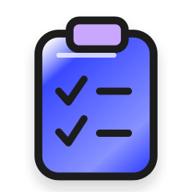
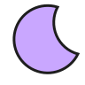
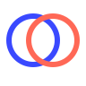
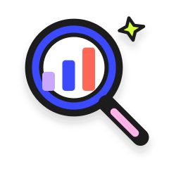
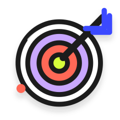
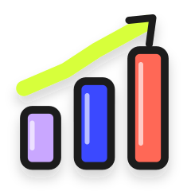
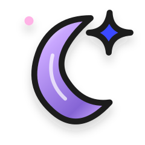
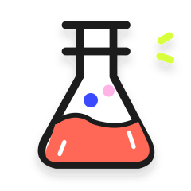
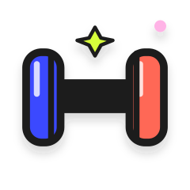
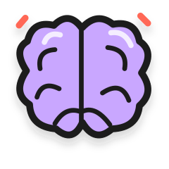

Cuéntanos cómo estás.
Comienza por tus síntomas, rutinas y energía percibida. Sin tener que saber de medicina.
Calia te ayuda a entender qué factores podrían estar detrás de tu fatiga, encontrar un siguiente paso posible y observar cómo cambia tu energía con el tiempo.
Descubre tu score de energíaSin promesas mágicas. Con preguntas claras y decisiones que caben en tu vida.
Hola, qué bueno que estás aquí.

Sueño
HábitosVista conceptual · sin puntaje clínico
La experiencia propuesta conecta lo que sientes con hábitos y datos relevantes. Cada etapa te ayuda a tomar mejores decisiones, sin sacar conclusiones apresuradas.

Comienza por tus síntomas, rutinas y energía percibida. Sin tener que saber de medicina.

Explora posibles factores: descanso, estrés, alimentación y estudios que ya tengas.

Una sugerencia práctica que tenga sentido para tu vida. No veinte pendientes más.

Registra cómo te sientes y reconoce tendencias, sin confundirlas con diagnósticos.
Este flujo describe la propuesta de producto, no funciones ya disponibles. El score orientativo utiliza tu energía percibida y el impacto del cansancio. No es un diagnóstico médico. La fecha de lanzamiento sigue por definir.
Trabajas, resuelves, estás para todos. Y hay días en los que simplemente ya no te queda energía para ti.

“Duermo, pero amanezco como si no hubiera descansado.”
“Mis estudios salen normales, pero yo no me siento normal.”
“Hago ejercicio y como bien. ¿Por qué sigo sin pila?”
“Tengo tantas cosas en la cabeza que no sé por dónde empezar.”“Quiero saber si lo que estoy haciendo de verdad me ayuda.”
Calia Lab nace para acompañar a mujeres que se sienten cansadas, estresadas o distintas a antes, incluso cuando intentan cuidarse y sus análisis aparecen dentro de rangos habituales.
Queremos reunir información que suele estar dispersa, explicar posibles factores con claridad y ayudarte a elegir una acción realista para observar cómo vas cambiando. Sin diagnósticos automáticos ni promesas imposibles.
Los rangos de referencia son una parte de la historia. Tus síntomas, tu sueño y lo que ha cambiado en tu vida también importan. Calia puede ayudarte a ordenar esas pistas y a preparar preguntas para tu profesional de salud.
No queremos empezar por pedirte más estudios. La experiencia está diseñada para partir de lo que sientes y de los datos que ya tengas. La necesidad de pruebas adicionales siempre debe evaluarse con un profesional.
El score Calia (0–100) combina en partes iguales tu energía percibida (1–10) y las nueve respuestas sobre cómo interfiere el cansancio (9 a 63), convirtiéndolas a la misma escala. Es orientativo, no un instrumento médico validado, y no identifica causas ni establece diagnósticos.
La idea es avanzar con una acción realista cada vez, no sumar otra tarea interminable a tu agenda. La duración exacta del cuestionario y del seguimiento está por definirse.
El cuestionario es parte de un prototipo en desarrollo; su fecha de publicación todavía no está confirmada. El precio y el alcance de los futuros servicios de Calia Lab siguen por definir.
Responde a tu ritmo: empieza por cómo te sientes hoy, revisa el impacto del cansancio y marca las señales que hayas notado.
Recibirás un resumen orientativo, no un diagnóstico. No necesitas cargar estudios para empezar.
Seis pasos, preguntas claras y un resultado que puedes usar para conversar mejor con un profesional.
Descubre tu score de energíaTus respuestas permanecen en tu navegador durante esta sesión; aún no hay almacenamiento de respuestas.